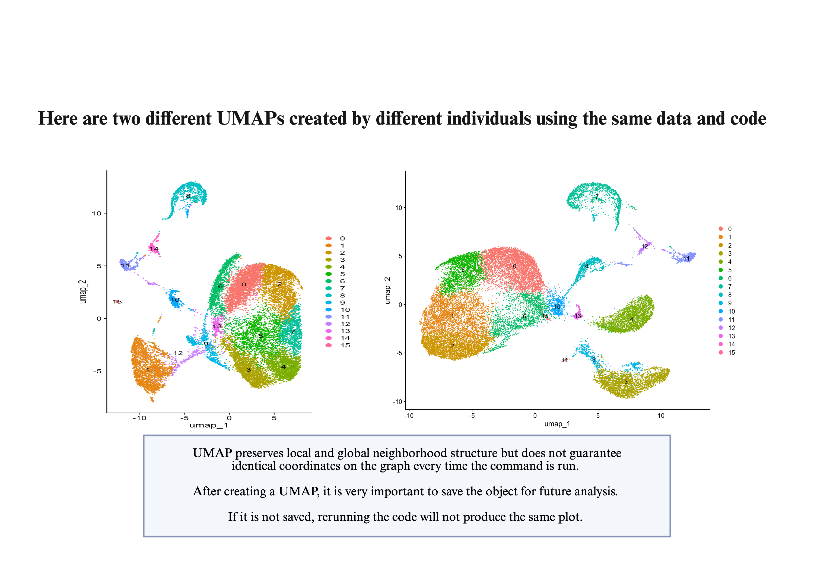
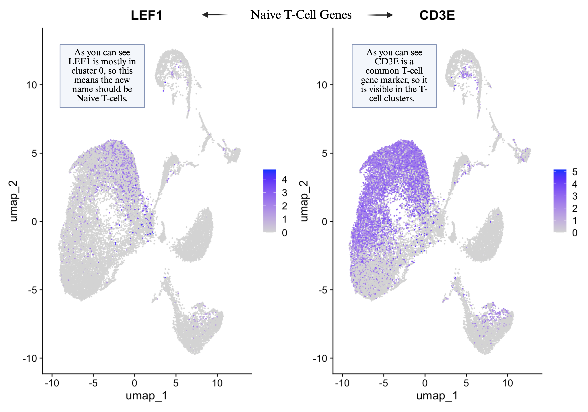
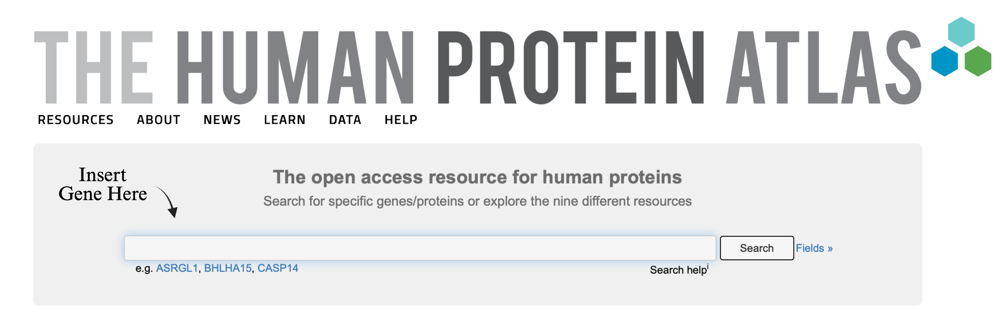

Annotation#
Download the WiseLab’s Data Object for Analysis#
In R, the RunUMAP() command provides different graphing positions each time it is run.

Instead of having everyone attempt to annotate their unique UMAP, the same data object will be downloaded to annotate together.
data2 <- "tutorial_microfluidics_pediatricblood_filtered_UMAP9.rds"
so2 <- readRDS(paste(data.dir, data2, sep = ""))
so2
Labeling of cell clusters to known blood-based cell types#
Now that we have clusters of similar cells, we would like to identify which cell types these are.
We know that the samples came from blood, so most of the content will be blood and immune cells.
Given that we have gene expression values for each cell, we can use the average gene expression of each cluster to try and determine the cell type.
However, this requires biological knowledge of the genes associated with each cell type in the blood.
The Wise Lab at Salve Regina University has a running database of genes associated with each cell type in literature.
You can download it from the same github as earlier, move it to your working directory, load it as below and take a peak.
marks <- read.delim(paste(data.dir,'scRNAseqMarkerList_WiseLab - v3.csv', sep=""),sep=",",header=T, stringsAsFactors = FALSE)
Next we want to save the cluster numbers as a column in our Seurat meta.data.
The meta.data object in Seurat gives additional non-RNA count based information about each cell. For example, if instead of cells and RNA expression counts we had students and their test scores, the meta.data could include school district, classroom, last years grades.
To pull the current label (numerical) for each cluster, we use Seurat’s Idents() command.
Click here to visit the documentation for Idents()
To add a column to a data frame we can use the $ symbol following the data structures name.
The arrow <- means “put this into this variable name.”
Then we can take a list of common genes that differentiate blood cell types and turn them into data through the combine command, c().
The gene names must be in quotes as they are characters, not commands.
so2@meta.data$originalcluster <- Idents(so2)
annotategenes <- c("CD3E", "GNLY","CD79A", "TCF7", "GZMK", "GZMA","ZNF683","KLRC2", "MS4A1", "PF4", "MNDA","HDC","HBB")
This command creates a list of genes that help identify major immune cell types.
For example:
CD3E is a commonly known gene expressed in T cells.
HBB is a commonly known gene expressed in red blood cells.
PF4 is a commonly known gene expressed in platelets.
Feature Plots and Cluster Labeling#
Then we will use the FeaturePlot() Seurat command to overlay those genes on our UMAP.
Click here to visit the documentation for the Feature Plot
FeaturePlot is utilized to produce a visualization. In this case, a UMAP is used as the underlying image and then we show within each cell in the UMAP if the gene is being expressed and how strong it is expressed. From there, we can deduce which clusters express that gene.
That allows us to figure out which clusters correspond to which cell type.
Try this now!
FeaturePlot(so2, features = annotategenes)
Let’s try to find Naive T-cells with a list of genes: LEF1 and T-cell general gene marker CD3E.
Make a feature plot of these genes:
FeaturePlot(so2, features= c("LEF1", "CD3E"),label = TRUE)
As you can see LEF1 is mostly in cluster 0 so this means the new names should be Naive T-cells.

Let’s try to find Activated T-cells: NKG7, GZMA, CCL5, PRF1, CD3E, GNLY, GZMH, GZMK
Make a feature plot of these genes:
FeaturePlot(so2, features=c("CD3E", "CD3G" ,"NKG7", "GZMA", "CCL5", "PRF1", "GNLY", "GZMH", "GZMK"),label = TRUE)
Only those cells expressing CD3E or CD3G are from there we can see those residing in cluster 1 and 5 have GZMK, PRF1 and more. Perhaps one is activated and one is more NKT-cell like.
Let’s try to find NKT cells: NKG7, GZMM, GNLY
Make a feature plot of these genes:
FeaturePlot(so2, features=c("NKG7","GZMM", "GNLY"),label = TRUE)
These seem higher in 1, so 5 will be activated and cluster 1 will be NKT-cells.
Let’s try to find NK cells: NKG7, GNLY, GZMH
Make a feature plot of these genes:
FeaturePlot(so2, features= c("NKG7", "GNLY", "GZMH"),label = TRUE)
These seem highest in 2 and 6 clusters, perhaps one cluster represents more activated NK cells.
Let’s try to find Activated NK cells: NKG7, GNLY, GZMK, CD3E
Make a feature plot of these genes:
FeaturePlot(so2, features=c("NKG7","GNLY", "GZMK", "PRF1", "CCL4", "G0S2", "GZMB"),label = TRUE)
This one is harder to differentiate, so a violin plot can be utilized in this case.
VlnPlot(so2, features=c("NKG7","GNLY", "GZMK", "PRF1", "CCL4", "G0S2", "GZMB"),label = TRUE)
It looks higher in 2 than 6, thus cluster 2 will be activated NK-Cells and cluster 6 will be NK.
Let’s try to find Naïve B-Cell: CD79A, TCL1A, MS4A1
Make a feature plot of these genes:
FeaturePlot(so2, features=c("CD79A", "TCL1A", "MS4A1"),label = TRUE)
What cluster would be Naïve B-cells?
Cluster 3.
Let’s try to find neutrophils: MNDA
Make a feature plot of these genes:
FeaturePlot(so2, features= "MNDA")
What cluster would be Neutrophils?
Cluster 4.
Let’s try to find platelets: PF4, MYLK, MYL9
Make a feature plot of these genes:
FeaturePlot(so2, features=c("PF4", "MYLK", "MYL9"),label = TRUE)
What cluster would be platelets?
Cluster 7.
Let’s try to find Mast cells/Basophils: HDC, IL3RA
Make a feature plot of these genes:
FeaturePlot(so2, features=c("HDC", "IL3RA"),label = TRUE)
What cluster would be Basophils?
Cluster 8.
Let’s try to find Memory B cells: CD27, XBP1, CD3E, GNLY
Make a feature plot of these genes:
FeaturePlot(so2, features= c("CD27", "XBP1", "CD3E", "GNLY"),label = TRUE)
What cluster would be Memory B-cells?
Cluster 9.
Let’s try to find dying cells: percent.mt
Make a feature plot of these genes:
FeaturePlot(so2, features= "percent.mt")
What cluster would be dying cells?
Cluster 10.
Let’s try to find pDCs: LILRA4, TCF4, IL3RA
Make a feature plot of these genes:
FeaturePlot(so2, features=c("LILRA4", "TCF4", "IL3RA"),label = TRUE)
What cluster would be pDCs?
Cluster 11.
Let’s try to find Macrophage/Monocytes: CD14, FCN1
Make a feature plot of these genes:
FeaturePlot(so2, features=c("CD14", "FCN1"),label = TRUE)
What cluster would be Macrophage/Monocytes?
Cluster 12.
Let's try to find RBCs: HBB, HBD
Make a feature plot of these genes: ``` FeaturePlot(so2, features=c("HBB", "HBD"),label = TRUE) ```
What cluster would be RBCs?
Cluster 13.
Let's try to find Plasmablasts: TNFRSF17, CHAC2, IGHA1
Make a feature plot of these genes: ``` FeaturePlot(so2, features = c("TNFRSF17","CHAC2","IGHA1"),label = TRUE) ```
What cluster would be Plasmablasts?
Cluster 14.
Now we can create an organized annotation list with the clusters original ids, their corresponding cell type, and genes found within that cluster.
Cluster 0 -Naive T-Cells (LEF1)
Cluster 1- NKT-Cells (NKG7,KLRB1,GZMM)
Cluster 2-Activated NK-Cells (NKG7, G0S2, GZMA, GZMB, GZMH, PRF1, CCL4)
Cluster 3-B Cells (CD79A, TCL1A, MS4A1)
Cluster 4- Neutrophil (MNDA)
Cluster 5- Activated T-cells CD3G, NKG7, GZMA, CCL5, GZMH, PRF1.
Cluster 6 -NK-Cells (NKG7, GZMH, NCAM1, KLRD1)
Cluster 7- Platelets (PF4, MYLK, MYL9)
Cluster 8- Mast/Basophil(CPA3, HDC, FCER1A, IL3RA)
Cluster 9- Memory B-Cell CD27, XBP1, CLEC2D, SSPN, CD3E
Cluster 10- Dying Cells (percent.mt)
Cluster 11- pDC (LILRA4, *TCF4, *IL3RA-all 3 in sheet say dendritic as well).
Cluster 12- Macrophage/Monocyte (CD14,FCN1)
Cluster 13- RBCs (HBB,HBD)
Cluster 14- Plasmablasts TNFRSF17, CHAC2, IGHA1
Cluster 15 - ?
Unbiased list of genes associated with each cluster through Seurat’s FindMarkers#
Based on our previous knowledge and marker list there is only one cluster unknown, cluster 15.
On the UMAP it resides within an NK cell cluster, but also close to dying cells.
Lets use a statistical test for what genes differentiate each cluster FindAllMarkers
Click here to visit the documentation for FindAllMarkers() to get the gene expression markers for all identity classes
This compares all clusters to each other and defines genes that are associated with each cluster.
marksf <- FindAllMarkers(so2, only.pos = T)
Save your File#
Because this is a table and not a complicated R structure such as our seurat object, we can just save it as a text file.
Click here to visit the documentation for write.table()
write.table(marksf, file= paste(data.dir,"finalallmarkerfile.txt", sep = ""), sep="\t", row.names = F, col.names = T)
Open the file you created and if you scroll to cluster 15, the top gene is FGFBP1 and then many T-cell Receptor genes along with WFDC2
Exploring gene information through the use of databases#
The Human Protein Atlas#
There are many databases that gather biology gene based information. Let’s explore a few to see if we can figure out what the top genes from cluster 15 could suggest.
The Human Protein Atlas is an open access database that shows where every human protein is found in the body, in which tissues, which cell types, and where within the cell.
However, it also houses RNA based information in its single cell sections
Let’s navigate to FGFBP1.
Click here to visit the documentation the Protein Atlas for FGFBP1
Under the Monaco and Schmiedel dataset, it shows that it can be in NK cells and some gamma-delta T-cells.
What does the human tissue atlas single cell sections say about WFDC2? Enter WFDC2 in the human protein atlas tool bar.

Select the first gene by clicking on its name.
Then navigate to the single cell data by clicking on the box to the right of summary that says single cell.
Scroll down to the immune cell section.
Try on your own:
Choose a specific cluster and its associated gene.
Input the gene into the Human Protein Atlas to check if your annotation is correct.
If we are still unsure, in order to differentiate between specific clusters instead of all, you can also use direct cluster to cluster comparisons with FindMarkers.
Click here to visit the documentation FindMarkers
Comparison of clusters 6 and 15#
marks_compare <- FindMarkers(so2, ident.1 = 15, ident.2 = 6)
The top genes seem to be T-cell Receptor alpha and beta genes, including TRAV12-3.
FeaturePlot(so2, features= "TRAV12-3")
This would rule out cluster 15 being gamma delta T-cells as they are using alpha-beta chains.
However, we also see lots of genes starting with RPL, which are ribosome proteins and suggest they may be under stress, perhaps due to closeness to our dying cells, these are dying T-cells.
Rename Clusters by Cell Type#
Here we will create data that lists each new cell identification by creating a vector with the combine command c().
new.ids <- c("Naïve T-cells", "NKT-cells", "Activated NK-cells", "B-cells","Neutrophils", "Activated T-cells","NK-cells","Platelets","Mast cells and Basophils", "Memory B-cells","Dying cells","pDC-cells","Macrophages and Monocytes", "RBCs", "Plasmablasts", "Dying cells")
Note that here we use "Dying Cells" twice, so this will eventually combine these two clusters into one.
New Seurat Object#
We will rename the new seurat object to keep the original as is and work with a new version “so_v1”.
so_v1 <- so2
Now we need to apply the names: Click here to visit the documentation RenameIdents
names(new.ids) <- levels(so_v1)
so_v1 <- RenameIdents(so_v1, new.ids)
Plot UMAP with new Seurat with cluster names#
DimPlot(so_v1, reduction = "umap", label = T)
Save the object with new cluster labels#
saveRDS(so_v1, file = paste(data.dir, "healthydonor_test_tutorial_v7.RDS", sep=""))
Change Colors#
The standard colors in R are too closely related and we would like ones that shows related lineages of cells better.
Search the internet for colors in R and choose which color you would like each cluster to be.
Remember to input your chosen colors in the same order as the clusters 0 to 15.
Here is an example of the code where you will input the names of each color. We will create a vector called cols_scheme by using the <- (variable creation command) and c() combine into avector function.
cols_scheme <- c("cluster1color","cluster2color",...)
Now save this file as a pdf, as a reminder.
The pdf() command requires you tell it where to save the pdf. You can also state what size the pdf should be.
Then after you give that information, any commands of visualizations that are typed afterwards will be placed into the pdf
Then to close and turn off the pdf you type dev.off()
pdf(file=paste(plot.dir, "UMAP9dim_customcolors_labeled.pdf", width=10, height=8))
DimPlot(so_v1, reduction = "umap", label = T, cols = cols_scheme)
dev.off()
Make a violin plot for others to show major cell clusters#
Make a list of genes for a Violin plot to confirm choices#
Here we will create a new list of genes, different than our original testing annotategenes. Then we will create a violin plot but remove each dot by using that pt.size of the dots set to 0
dg <- c("CD3E", "CD8A", "CD4", "NCAM1","NKG7", "CD79A", "MS4A1", "PF4", "PRF1","HBB", "MNDA", "AIF1", "LEF1", "CD14", "IL7R","ZNF683","FCGR3A","FCER1A")
VlnPlot(so_v1, features = dg, pt.size = 0)